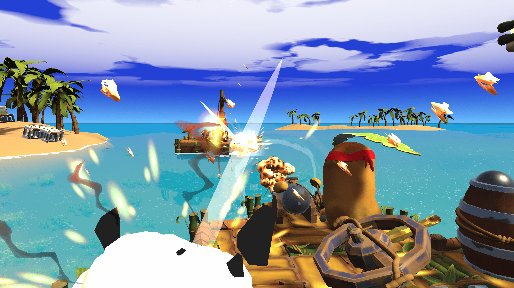

Bienvenue !
Contact
Pirate Chips

Soyez le plus patate des moussaillons et prenez part à cette bataille sans foi ni loi !
Formez des équipes, enfilez votre chapeau de pirate, construisez votre navire,
puis lancez-vous en mer, tout est permis : tirez au canon, donnez des coups de pagaie,
sautez sur le bateau ennemi pour le saboter ou naviguez à pleine vitesse pour l’enfoncer,
réparez ou reconstruisez votre bateau en pleine bataille, la liste est longue. Rien n’est figé,
tout peut être détruit… ou amélioré !
Un seul objectif : être le dernier des tubercules à flot.
Embarquez dans ce Couch Game délirant, et ce, dès les premières images,
n'attendez pas de lancer une partie pour régler les comptes, c'est ce que font les vrais pirates yar !
Prêt à jouer avec vos propres règles ?
Projet réalisé en quatre mois pour le DESS en Design de jeu à l’Université de Montréal
Tous : Designer de jeu
William Bourassa Bennett : Développeur
Justin Carrier : Développeur Rami Serhal : Designer de niveau, designer de son
Tom Bonnot : Chef de projet, artiste de jeu 3D
Merci aux externes qui ont aidé sur le projet :
Hélène Litzler : UI en jeu
Lauriane Paty : Artiste de jeu 3D
Léonard Ponthieu : Artiste VFX
Jean-François Kharrat : Animateur 3D
Zoé Martinez Salas : Compositeur
Projet 2
Description complète du projet 2 ici.
Retour en hautProjet 3
Description complète du projet 3 ici.
Retour en hautProjet 4
Description complète du projet 4 ici.
Retour en hautProjet 5
Description complète du projet 5 ici.
Retour en hautProjet 6
Description complète du projet 6 ici.
Retour en hautProjet 7
Description complète du projet 7 ici.
Retour en hautProjet 8
Description complète du projet 8 ici.
Retour en hautProjet 9
Description complète du projet 9 ici.
Retour en hautProjet 10
Description complète du projet 10 ici.
Retour en haut